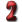
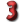
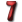

Hit Points
Description
Hit Points (or HP) are a game mechanic used to measure the health of a character. During combat, wounded characters will lose their HP. When a character gains a new level, additional HP is awarded. Should character's HP drop to 0, he or she will become unconscious. When the HP drops to -20 or below, that character will die (well, technically speaking, "almost" die, because that character will be teleported to the closest respawn point). Needless to say, HP is an important character statistic to be monitored during play. HP can be restored using various food or medical items such as stimpaks, super stimpaks etc.
HP Formulas
- Base Hit Points are calculated using this formula: 55+ST+EN*2.
- Every time you level up (until level 26) you gain 2 +EN/2 (final value is rounded down). If you set your endurance to an uneven number (like 7 or 9) you will gain additional hit point every 2 level to balance it out. So:
 Endurance - 2 Hit Point per level + 1 every two levels = 2,5 HP per level.
Endurance - 2 Hit Point per level + 1 every two levels = 2,5 HP per level.
 Endurance - 3 Hit Point per level.
 Endurance - 3 Hit Point per level + 1 every two levels = 3,5 HP per level.
 Endurance - 4 Hit Point per level
Endurance - 4 Hit Point per level
 Endurance - 4 Hit Point per level + 1 every two levels = 4,5 HP per level.
Endurance - 4 Hit Point per level + 1 every two levels = 4,5 HP per level.
Endurance - 5 Hit Point per level
 Endurance - 5 Hit Point per level + 1 every two levels = 5,5 HP per level.
 Endurance - 6 Hit Point per level
Endurance - 6 Hit Point per level
Endurance - 6 Hit Point per level + 1 every two levels = 6,5 HP per level.
 Endurance - 7 Hit Point per level
Endurance - 7 Hit Point per level
- From level 26 to level 99 you will gain 1 hit point per each second level.
- Taking a Mutant trait will give you 100 bonus hit points.
- Choosing a lifegiver perk will give you 40 bonus hit points. You can take this perk up to two times.
- Installing the survival implant will give you 30 bonus hit points.
- Winning a chess game against ZaX in Glow will give you an option to choose 10 bonus hit points.